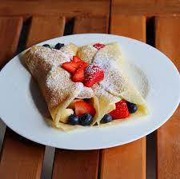

Crepes

Description
A quick and easy recipe for dessert crepes with an assortment of fruit.
This serves 2-3 people and takes about 25-30 minutes to prepare.
For best results, prepare crepes a day early and leave refridgerated overnight before cooking.
Crepe Ingredients
- 1 1/3 cups milk
- 1 1/3 cups flour
- 2 Tbsp sugar
- 2 eggs
- dash of oil
- dash of salt
- 2 tsp vanilla (optional)
Toppings Ingredients
The following ingredients are suggestions/optional and not all of them have to be prepared. Feel free to add your own toppings.
- Strawberries
- Blueberries
- Raspberries
- Blackberries
- Bananas
- Nutella
- Maple Syrup
- Yogurt
Steps
- Add all ingredients in a bowl.
- Blend together (with blender) or handmix.
- Refridgerate overnight (optional).
- Spray crepe pan with oil and place on stove.
- Let crepe pan heat over stove until it is evenly hot.
- Scoop around 1/3 a cup of crepe batter onto pan and spread by tilting pan simultaneously.
- Wait till crepe batter bubbles before flipping crepe.
- Wait a few seconds before removing flipped crepe from pan.
- Place finished crepes on a paper-towel-covered plate and drape a cloth over them to conserve heat.
- Wash and slice toppings if needed.